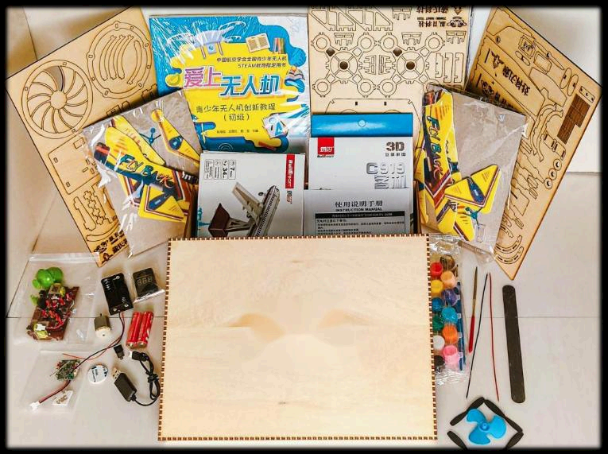

AeroBOT-K1 青少年无人机科技教育系列套餐
专为青少年打造的集硬件组装、实机飞行、科创竞技与基础科研于一体的阶梯式培育体系。

产品介绍
本青少年科技教育系列产品专为青少年量身打造，深度融合无人机硬件组装、实机飞行、科创竞技比拼与基础科研探究全流程实训环节，构建一体化、阶梯式青少年无人机科创培育体系。
产品配套专业化教学级无人机标准套件、系统化专属授课课程包及标准化实操实验指导手册。所有配套硬件设备与软件控制系统均针对校园课堂教学、实训及研学活动场景深度优化调校，采用安全化结构设计与简易化操作逻辑，有效规避实训操作风险。
整套设备支持个性化研学课程定制开发，全面适配校园科技节展演、教育部白名单科创赛事参赛及青少年科创课题深度探究等多元应用场景，搭建从科技兴趣启蒙、基础实操训练到高阶竞赛比拼与科研创新实践的完整进阶成长通路。
核心功能
硬件组装实训：提供标准化的无人机套件，让学生在动手组装过程中理解机械结构与电子连接原理。
实机飞行训练：配备安全化设计的飞行器，支持在受控环境下进行基础飞行操控练习。
编程逻辑学习：通过模块化编程核心逻辑的学习，培养学生的计算思维与算法基础。
科创竞技支持：系统设计对标各类科创赛事，支持学生进行项目式学习与竞赛准备。
产品特点
安全性高：采用安全化结构设计与简化操作逻辑，上手门槛低，全面保障教学过程安全稳定。
体系完整：涵盖空气动力学基础、姿态飞控技术及编程逻辑，循序渐进夯实科创理论。
兼容性强：设备兼容性好，操作简单易用，适合不同年龄段青少年的认知水平。
专业背书：由高校无人机系博硕团队亲自指导教案及教具开发，确保内容的科学性与前沿性。
基本配置参数
教学价值
AeroBOT-K1 旨在系统性培育青少年工程实践能力与科技创新思维。通过在沉浸式动手实操过程中，学生可以系统学习空气动力学基础飞行原理及无人机姿态飞控核心技术。
该套餐不仅关注技能传授，更注重为青少年深耕科创领域、走好科技创新成长道路筑牢扎实核心基础，助力学生在未来的科技竞争中占据优势。
适用场景
适用于中小学科技课堂、少年宫培训中心、科普教育基地以及各类青少年研学营地。
特别适合用于校园科技节展演准备、教育部白名单科创赛事赛前训练，以及青少年宫开展的周末兴趣班或寒暑假集训营。